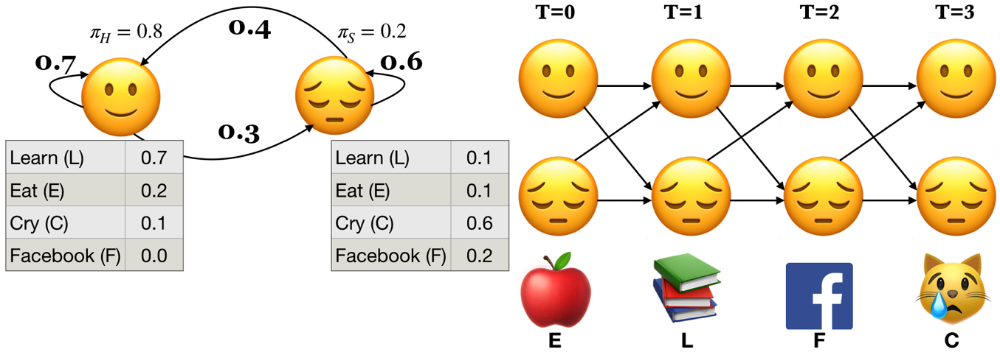

Baum-Welch (BW) algorithm#
2. The backward algorithm#
2.1 Introduction#
In the last lecture we talked about supervised training of HMMs where we assumed that we had mapping between observation sequences and hidden state sequences.
In real life we rarely have such mapping available.
For example, you can imagine how much manual effort it would be to come up with gold part-of-speech tag sequences on a large enough sample of text data, say Wikipedia, so that we have enough training data in order to learn initial state probabilities, transition probabilities, and emission probabilities.
Question we want to answer
Given a large observation sequence (or a set of observation sequences) \(O\) for training, but not the state sequence, how do we choose the “best” parameters \(\theta\) that explain the data \(O\)?
We want our parameters \(\theta\) to be set so that the available training data is maximally likely.
We do this using the forward-backward algorithm.
Recall: The forward algorithm
Computer probability of a given observation sequence.
Given a model with parameters \(\theta = <\pi, T, B>\), how do we efficiently compute the probability of a particular observation sequence \(O\)?
Example: What’s the probability of the sequence below?
Three steps of the forward algorithm.
Initialization: Compute the \(\alpha\) values for nodes in the first column of the trellis \((t = 0)\).
Induction: Iteratively compute the \(\alpha\) values for nodes in the rest of the trellis \((1 \leq t < T)\).
Conclusion: Sum over the \(\alpha\) values for nodes in the last column of the trellis \((t = T)\).

Sum over all possible final states:
\(P(O;\theta) = \sum\limits_{i=1}^{n}\alpha_i(T-1)\)
\(P(E,L,F,C) = \alpha_üôÇ(3) + \alpha_üòî(3) = 0.00023 + 0.00207 = 0.0023\)

What are we doing in the forward algorithm?
In forward algorithm the point is to compute \(P(O;\theta)\).
For each state \(i\), we calculated \(\alpha_i(0), \alpha_i(1), \alpha_i(2), ...\)
The trellis was computed left to right and top to bottom.
The forward algorithm stores the probabilities of all possible 1-state sequences (from the start), to store all possible 2-state sequences (from the start), to store all possible 3-state sequences (from the start) and so on.
2.2 The backward algorithm intuition#
Less intuitively, we can also do that in reverse order, i.e., from right to left and top to bottom.
We’ll still deal with the same observation sequence which evolves forward in time but we will store temporary results in the backward direction.
In the \(i^{th}\) node of the trellis at time \(t\), we store the probability of starting in state \(i\) at time \(t\) then observing everything that comes thereafter. $\(\beta_{i}(t) = P(b_{t+1:T-1})\)$
The trellis is computed right-to-left and top-to-bottom.
The backward algorithm: steps
Three steps of the backward procedure.
Initialization: Initialize \(\beta\) values for nodes in the last column of the trellis. $\(\beta_i(T-1) = 1\)$
Induction: Iteratively compute the \(\beta\) values for nodes in the rest of the trellis \((1 \leq t < T)\) as the probability of being in state \(i\) at time \(t\) and reading everything to follow. $\(\beta_i(t) = \sum_{j=1}^N a_{ij}b_{j}(o_{t+1}) \beta_j(t+1)\)$
Conclusion: Sum over the \(\beta\) values for nodes in the first column of the trellis \((t = 0)\) (i.e., all initial states).
2.3 The backward algorithm: Initialization \(\beta_üôÇ(3)\) and \(\beta_üòî(3)\)#
Initialize the nodes in the last column of the trellis \((T = 3)\).
\(\beta_üôÇ(3) = 1.0\)
\(\beta_üòî(3) = 1.0\)
2.4 The backward algorithm: Induction#
Iteratively compute the nodes in the rest of the trellis \((1 \leq t < T)\).
To compute \(\beta_j(t)\) we can compute \(\beta_{i}(t+1)\) for all possible states \(i\) and then use our knowledge of \(a_{ij}\) and \(b_j(o_{t+1})\) $\(\beta_i(t) = \sum_{j=1}^N a_{ij}b_{j}(o_{t+1}) \beta_j(t+1)\)$
The backward algorithm: Induction \(\beta_üôÇ(2)\)
Probability of being at state üôÇ at \(t=2\) and observing everything to follow.
The backward algorithm: Induction \(\beta_üòî(2)\)
Probability of being at state üòî at \(t=2\) and observing everything to follow.
Carry out rest of the steps as home work.
2.5 The backward algorithm: Conclusion#
Sum over all possible initial states to get the probability of an observation sequence in the reverse direction.
We’re not doing this just for fun.
We are going to use it for unsupervised HMM training!
In general, we can combine \(\alpha\) and \(\beta\) at any point in time to represent the probability of an entire sequence.
This is going to be vital for training of unsupervised HMMs.
3. Baum-Welch (BW) algorithm (high-level idea)#
3.1 Introduction#
Given a large observation sequence (or a set of observation sequences) \(O\) for training, but not the state sequence, how do we choose the “best” parameters \(\theta\) that explain the data \(O\)?
We want our parameters \(\theta\) to be set so that the available training data is maximally likely.
Can we use MLE?
If the training data contained state sequences, we could simply do maximum likelihood estimation, as we did in the last lecture, to get transition probabilities and the emission probabilities.
But when we are only given observations, we cannot count the following:
How often we move from \(q_{i-1}\) to \(q_i\) normalized by how often we move from \(q_{i-1}\) to anything: \(p(q_i|q_{i-1}) = \frac{Count(q_{i-1} q_i)}{Count(q_{i-1} \text{ANY STATE })}\)
What’s the proportion of \(q_i\) emitting the observation \(o_i\) .
\(p(o_i|q_{i}) = \frac{Count(o_i \text{ and } q_i)}{Count(q_{i})}\)
In many cases, the mapping between hidden states and observations is unknown and so we can’t use MLE.
How to deal with the incomplete data?
Use unsupervised learning
3.2 Iterative unsupervised approach#
We guess the parameters and iteratively update them.
Unsupervised HMM training is done using a combination of the forward and the backward algorithms.
The idea is that we can combine \(\alpha\) and \(\beta\) at any point in time to represent the probability of an entire observation sequence.
The forward algorithm computes the \(\alpha\) values, which represent the probability of being in a particular state at a particular time, given the observation sequence up to that time.
The backward algorithm computes the \(\beta\) values, which represent the probability of observing the rest of the sequence after that time.
We define \(\gamma_i(t)\), which represents the probability of being in state \(i\) at time \(t\) given the entire observation sequence \(O\). We calculate it by combining \(\alpha\) and \(\beta\) values calculated by the forward and backward algorithms.
We define another probability \(\xi_{ij}(t)\) of landing in state \(s_i\) at time \(t\) and transitioning to state \(s_j\) at time \(t+1\) regardless of the previous states and future states given the observations.
These probabilities are used to compute the expected sufficient statistics
the expected number of times each state is visited
the expected number of times each transition is made, given the observation sequence.
Expectation maximization
We will start with a randomly initialized model.
We use the model to calculate new \(\alpha_i(t), \beta_i(t), \gamma_i(t), \xi_{ij}(t)\).
We update the model.
We can do this iteratively until convergence or stopping condition.

Can we use MLE?#
If the training data contained state sequences, we could simply do maximum likelihood estimation, as we did in the last lecture.
But when we are only given observations, we cannot count the following:
How often \(q_{i-1}\) and \(q_i\) occur together normalized by how often \(q_{i-1}\) occurs: \(p(q_i|q_{i-1}) = \frac{Count(q_{i-1} q_i)}{Count(q_{i-1} \text{ANY STATE })}\)
How often \(q_i\) is associated with the observation \(o_i\).
\(p(o_i|q_{i}) = \frac{Count(o_i \text{ and } q_i)}{Count(q_{i})}\)
Solution: iterative unsupervised approach#
Iterative approach.
We guess the counts and iterate.
Unsupervised HMM training is done using a combination of the forward and the backward algorithms.
The idea is that we can combine \(\alpha\) and \(\beta\) at any point in time to represent the probability of an entire observation sequence.
What do we have so far?#
\(\alpha_i(t)\) gives us the probability of being in state \(i\) at time \(t\) knowing everything that came till time \(t\).
\(\beta_i(t)\) gives us the probability of being in state \(i\) at time \(t\) knowing what’s going to come in the future.
Combing \(\alpha\) and \(\beta\)#
We define one more parameter \(\gamma_i(t)\), which is a fusion of the \(\alpha_i(t)\) and the \(\beta_i(t)\) parameters.
\(\gamma_i(t)\) tells us the probability of being in a state \(i\) at time \(t\) knowing everything that came till time step \(t\) and everything that’s coming in the future.
How to calculate \(\gamma_i(t)\)?#
What’s the probability of being in state \(i\) at time \(t\) and given the entire observation sequence \(O\)?
Note that this is different than just looking at \(\alpha\) or \(\beta\).
If you know what came before you might guess some state which is optimal given what you’ve seen so far, but if you also know what’s coming in the future, you might have to revise that guess because what’s coming in future might make the current most likely position not very likely in the global picture.
A new probability \(\xi_{ij}(t)\)#
We also need \(\xi_{ij}(t)\) for Baum-Welch.
We define a probability \(\xi_{ij}(t)\) of landing in state \(s_i\) at time \(t\) and transitioning to state \(s_j\) at time \(t+1\) regardless of the previous states and future states given the observations.

Let‚Äôs call it a bow-tie (üéÄ) picture.
Calculating \(\xi_{ij}(t)\)#
We define a new probability \(\xi_{ij}(t)\) as the probability of transitioning from state \(i\) at time \(t\) to state \(j\) at time \(t+1\) based on our current model, \(\theta_k\) and given the entire observation sequence \(O\).
Where are we so far?#
We have an existing model \(\theta=<\pi,A,B>\).
We have observations \(O\).
We have some tools: \(\alpha_i(t), \beta_i(t), \gamma_i(t), \xi_{ij}(t)\).
Goal: We want to modify the parameters of our model \(\theta = <\pi, T, B>\) so that \(P(O;\theta)\) is maximized for the training data \(O\).
How can we use these tools to improve our model?
Baum-Welch algorithm or forward-backward algorithm#
There is no known way to solve for a globally optimal solution.
We search for a locally optimal solution.
We use an algorithm called Baum-Welch, which is a special case of expectation-maximization algorithm.
An expectation–maximization (EM) algorithm is an iterative method to find (local) maximum likelihood of parameters, where the model depends on unobserved latent variables.
With this algorithm we estimate the values for the hidden parameters of the model.
Expectation maximization#
We will start with a randomly initialized model.
We use the model to calculate new \(\alpha_i(t), \beta_i(t), \gamma_i(t), \xi_{ij}(t)\).
We update the model.
We can do this iteratively until convergence or stopping condition.
Given a model, we know how to calculate \(\alpha_i(t), \beta_i(t), \gamma_i(t), \xi_{ij}(t)\)
How to update the model?#
What’s the probability of ever being in state \(i\) regardless of the time?
\(\gamma_i(t)\) is the probability of being in state \(i\) at time \(t\)
If we sum over all \(t\) then we have a number that can be treated as the expected number of times \(i\) is ever visited.
What’s the probability of ever transitioning from state \(i\) to state \(j\)?
\(\xi_{ij}(t)\) is the probability of transitioning from \(i\) at \(t\) to \(j\) at \(t+1\)
If we sum over all \(t\) then we have a number which can be treated as the expected number of times \(i\) ever transitions to \(j\).
Updating \(\pi\)#
For each state \(i\)
\(\bar{\pi_i} = \gamma_i(0)\) = expected frequency in state \(i\) at time 0.
Updating transition probabilities \(A\)#
Updating observation probabilities \(B\)#
Expectation maximization#
We now have our updated parameters \(\bar{\theta}\)
We can use these updated parameters to calculate new \(\alpha_i(t), \beta_i(t), \gamma_i(t), \xi_{ij}(t)\).
We can do this iteratively until convergence or stopping condition.
Expectation and maximization#
If we knew \(\theta\), we could make expectations such as
Expected number of times we are in state \(s_i\)
Expected number of transitions \(s_i \rightarrow s_j\)
If we knew
Expected number of times we are in state \(s_i\)
Expected number of transitions \(s_i \rightarrow s_j\) then we could computer the maximum likelihood estimate of \(\theta\) $\(\theta = <\pi_i, {a_{ij}}, {b_i(o)}>\)$
Expectation-maximization#
Expectation maximization (EM) is an iterative algorithm that alternates between two steps: expectation (E-step) and maximization (M-step).
Guesses the expected counts for the hidden sequence using the current model \(\theta_k\) in the \(k^{th}\) iteration.
Computes a new \(\theta_{k+1}\) that maximizes the likelihood of the data given the guesses in the E-step, which is used in the next E-step of \(k+1^{th}\) iteration.
Continue until convergence or stopping condition.
EM algorithm for HMM learning#
Initialize \(A\) and \(B\)
Iterate until convergence
E-step $\(\gamma_i(t) = \frac{\alpha_i(t) \beta_i(t)}{P(O;\theta)} \forall t \text{ and } i\)\( \)\(\xi_{ij}(t) = \frac{\alpha_i(t)a_{ij}b_j(o_{t+1})\beta_j(t+1)}{P(O;\theta)} \forall t, i, \text{ and } j\)$
M-Step $\(\bar{\pi_i} = \gamma_i(0), i=1 \dots N\)\( \)\(\bar{a}_{ij} = \frac{\sum_{t=1}^{T-1} \xi_{ij}(t)}{\sum_{t=0}^{T-1}\gamma_i(t)}, i,j=1 \dots N\)\( \)\(\bar{b}_j(o) = \frac{\sum_{t=1\text{ st }O_t = o}^T \gamma_j(t)}{\sum_{t=1}^{T}\gamma_j(t)}, i=1 \dots N, o \in O\)$
Return \(A\) and \(B\)
Update parameters \(\theta_{k+1}\) after each iteration.
Rinse and repeat until \(\theta_{k} \approx \theta_{k+1}\).
This algorithm does not estimate the number of states, which must be known beforehand.
Moreover, in practice, some constraints on the topology and initial state probability are imposed at the beginning to assist training.
A note on the EM algorithm#
Here, we are looking at EM in the context of hidden Markov models.
But EM algorithm is a general iterative method to find local MLE estimates of parameters when little or no labeled training data is available.
We can view K-Means clustering as a special case of expectation maximization.